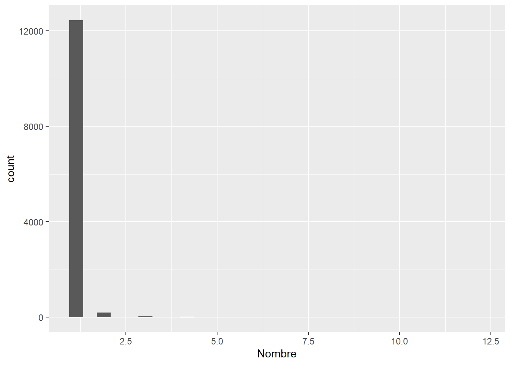
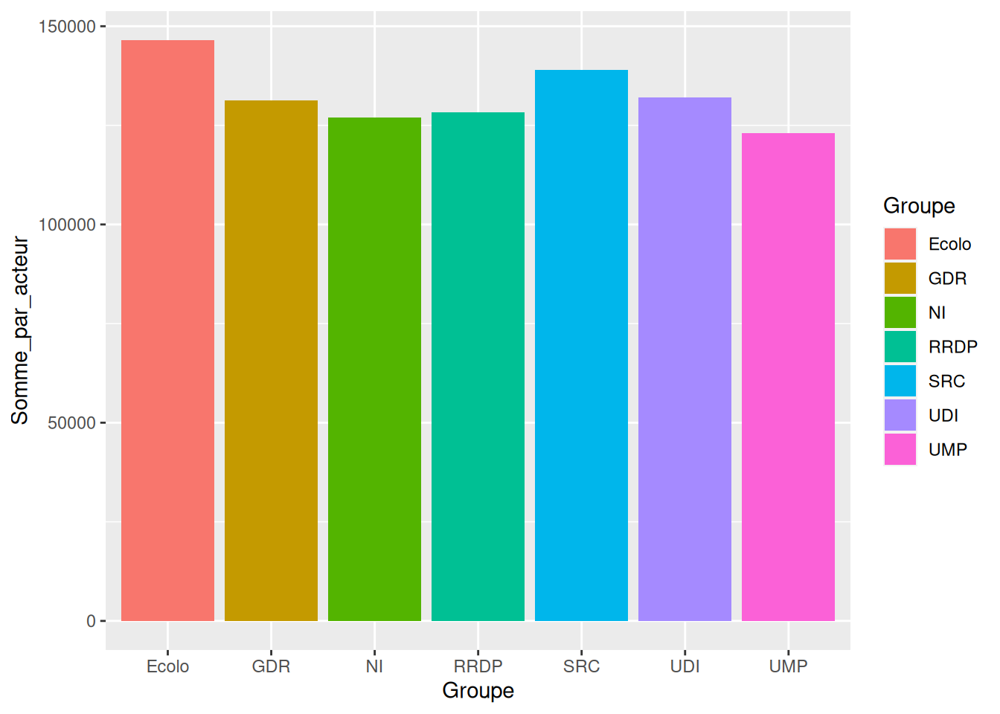

Chapter 8 Données des lycées pro.
8.1 Importation des données
On importe les données qui sont contenues dans un fichier Excel.
## tibble [185 × 18] (S3: tbl_df/tbl/data.frame)
## $ Année diplôme : num [1:185] 2019 2019 2019 2019 2019 ...
## $ Diplôme : chr [1:185] "BACPRO BOULANGER-PÂTISSIER" "BACPRO ARTISANAT ET METIERS D'ART OPTION : VERRERIE SCIENTIFIQUE ET TECHNIQUE" "BACPRO ARTISANAT ET METIERS D'ART OPTION : METIERS DE L'ENSEIGNE ET DE LA SIGNALETIQUE" "BACPRO TECHNICIEN DE MAINTENANCE DES SYSTEMES ENERGETIQUES ET CLIMATIQUES" ...
## $ Type de diplôme : chr [1:185] "BACPRO" "BACPRO" "BACPRO" "BACPRO" ...
## $ Filière : chr [1:185] "Alimentation, hôtellerie, restauration, tourisme" "Métiers d'art" "Industries graphiques, communication, audiovisuel, spectacle" "Electricité, électronique/numérique, environnement" ...
## $ Spécialité libellé : chr [1:185] "BOULANGER-PÂTISSIER" "ARTISANAT ET METIERS D'ART OPTION : VERRERIE SCIENTIFIQUE ET TECHNIQUE" "ARTISANAT ET METIERS D'ART OPTION : METIERS DE L'ENSEIGNE ET DE LA SIGNALETIQUE" "TECHNICIEN DE MAINTENANCE DES SYSTEMES ENERGETIQUES ET CLIMATIQUES" ...
## $ Taux d'emploi : num [1:185] 50.3 80 34.1 46.1 36.2 34.1 49.2 40 44.7 56.3 ...
## $ Année première année : num [1:185] 2020 2020 2020 2020 2020 2020 2020 2020 2020 2020 ...
## $ MEFSTAT libellé : chr [1:185] "2NDPRO BOULANGER-PÂTISSIER" "2NDPRO ARTIS.& MET.ART:VERR.SCIENT.TECHN" "2NDPRO ARTIS. ET MET. D'ART 2NDE COMMUNE" "2NDPRO TECHN. MAINT. SYST.ENERG.CLIMATIQ" ...
## $ Taux de pression : num [1:185] 2.367 0.5 0.725 0.658 0 ...
## $ Demandes : num [1:185] 284 3 29 634 0 ...
## $ Capacité : num [1:185] 120 6 40 963 3 ...
## $ Code diplôme...12 : chr [1:185] "40022105" "40022402" "40022403" "40022704" ...
## $ MEFSTAT11 : chr [1:185] "23810022105" "23810022402" "23810022404" "23810022704" ...
## $ Code type diplôme : num [1:185] 400 400 400 400 400 400 400 400 400 400 ...
## $ Code diplôme...15 : chr [1:185] "40022105" "40022402" "40022404" "40022704" ...
## $ MEFSTAT libellé court : chr [1:185] "2NDPRO22105" "2NDPRO22402" "2NDPRO22404" "2NDPRO22704" ...
## $ Admis apprentissage 2019: num [1:185] 163 0 9 196 42 29 96 3 69 164 ...
## $ Admis voie scolaire 2019: num [1:185] 1092 11 125 799 220 ...On a 185 lignes et 18 colonnes. A aller vérifier dans le fichier Excel.
C’est bon.
On a les colonnes Code diplome…12 et Code diplome…15 qui ont eu un problème car elle porte le même nom sous Excel ce qui n’est pas possible dans R. R a donc ajouter le numéro de la colonne lors de l’importation.
On vérifie qu’on a bien une seule année de diplôme :
##
## 2019
## 185On a vu que dans le tableau Excel, on a autant de valeurs pour le diplôme et le la Spécialité libellé que de lignes… De même pour les colonnes MEFSTAT et Code Diplôme.
On voit que la variable première année n’est pas très utile non plus.
On regarde de loin comment ça se comporte :
theme_gtsummary_compact(set_theme = TRUE, font_size = NULL)
lycee %>% select(-`Année diplôme`,-Diplôme,-`Spécialité libellé`,
-starts_with("MEFSTAT"),
-starts_with("Code Diplôme"),
-`Année première année`
) %>%
tbl_summary()| Caractéristique | N = 1851 |
|---|---|
| Type de diplôme | |
| BACPRO | 96 (52%) |
| CAP | 89 (48%) |
| Filière | |
| Aéronautique | 6 (3,2%) |
| Alimentation, hôtellerie, restauration, tourisme | 11 (5,9%) |
| Automobile, engins | 17 (9,2%) |
| Biochimie industrielle | 6 (3,2%) |
| Construction, bâtiment, travaux publics | 27 (15%) |
| Electricité, électronique/numérique, environnement | 13 (7,0%) |
| Gestion-administration, transport, logistique, sécurité | 14 (7,6%) |
| Industries graphiques, communication, audiovisuel, spectacle | 15 (8,1%) |
| Mer | 3 (1,6%) |
| Métiers d'art | 19 (10%) |
| Productique, mécanique, automatisation | 17 (9,2%) |
| Relation client, commerce, vente | 3 (1,6%) |
| Santé, social, services à la personne et à la collectivité | 14 (7,6%) |
| Textile, habillement, cuir | 20 (11%) |
| Taux d'emploi | 41 (31 – 50) |
| Taux de pression | 0,80 (0,53 – 1,17) |
| Manquant | 2 |
| Demandes | 174 (27 – 1 123) |
| Capacité | 234 (40 – 963) |
| Code type diplôme | |
| 400 | 96 (52%) |
| 500 | 89 (48%) |
| Admis apprentissage 2019 | 29 (4 – 164) |
| Admis voie scolaire 2019 | 220 (28 – 699) |
| 1 n (%); Médiane (EI) | |
On voit que les libellés sont assez variés, un peu trop avec des libellés comme Mer qui n’ont que 3 diplômes comme Relation client, etc..
On regarde les valeurs extrèmes et les quantiles pour les variables quantitatives.
theme_gtsummary_compact(set_theme = TRUE, font_size = NULL)
lycee %>% select(-`Année diplôme`,-Diplôme,-`Spécialité libellé`,
-starts_with("MEFSTAT"),
-starts_with("Code Diplôme"),
-`Année première année`
) %>% select(where(is.numeric)) %>%
tbl_summary(statistic = all_continuous() ~ "{mean} ({sd}) {min}-{max}")| Characteristic | N = 1851 |
|---|---|
| Taux d'emploi | 41 (16) 0-82 |
| Taux de pression | 0.92 (0.57) 0.00-2.94 |
| Unknown | 2 |
| Demandes | 1,754 (5,267) 0-36,249 |
| Capacité | 1,658 (4,776) 0-31,004 |
| Code type diplôme | |
| 400 | 96 (52%) |
| 500 | 89 (48%) |
| Admis apprentissage 2019 | 242 (579) 0-3,893 |
| Admis voie scolaire 2019 | 952 (2,396) 0-18,297 |
| 1 Mean (SD) Minimum-Maximum; n (%) | |
On voit que le code type diplome est reconnu comme numérique alors que c’est un code, donc on corrige :
Il y a aussi baleineau sous gravillons, il y a des zéros dans les taux et les admis. Donc des spécialités ne doivent pas être assuré cette année là :
nuls <- lycee %>% select(-`Année diplôme`,-`Spécialité libellé`,
-starts_with("MEFSTAT"),
-starts_with("Code Diplôme"),
-`Année première année`) %>%
filter(`Admis apprentissage 2019`==0 | `Admis voie scolaire 2019` == 0)
kable(nuls)| Diplôme | Type de diplôme | Filière | Taux d’emploi | Taux de pression | Demandes | Capacité | Code type diplôme | Admis apprentissage 2019 | Admis voie scolaire 2019 |
|---|---|---|---|---|---|---|---|---|---|
| BACPRO ARTISANAT ET METIERS D’ART OPTION : VERRERIE SCIENTIFIQUE ET TECHNIQUE | BACPRO | Métiers d’art | 80.0 | 0.5000000 | 3 | 6 | 400 | 0 | 11 |
| CAP DOREUR A LA FEUILLE ORNEMANISTE | CAP | Métiers d’art | 57.1 | 0.0000000 | 0 | 1 | 500 | 6 | 0 |
| CAP OUTILLAGES EN OUTILS A DECOUPER ET A EMBOUTIR | CAP | Productique, mécanique, automatisation | 0.0 | 0.3750000 | 9 | 24 | 500 | 0 | 11 |
| BACPRO ETUDE ET REALISATION D’AGENCEMENT | BACPRO | Construction, bâtiment, travaux publics | 28.3 | 1.2448980 | 549 | 441 | 400 | 0 | 303 |
| BACPRO METIERS DU PRESSING ET DE LA BLANCHISSERIE | BACPRO | Textile, habillement, cuir | 29.4 | 0.0444444 | 2 | 45 | 400 | 0 | 13 |
| BACPRO METIERS DU CUIR OPTION CHAUSSURES | BACPRO | Textile, habillement, cuir | 28.6 | 0.5869565 | 162 | 276 | 400 | 0 | 11 |
| BACPRO ARTISANAT ET METIERS D’ART OPTION : VERRERIE SCIENTIFIQUE ET TECHNIQUE | BACPRO | Métiers d’art | 80.0 | 0.7250000 | 29 | 40 | 400 | 0 | 11 |
| BACPRO TECHNICIEN EN APPAREILLAGE ORTHOPEDIQUE | BACPRO | Santé, social, services à la personne et à la collectivité | 34.5 | 0.8771930 | 50 | 57 | 400 | 0 | 49 |
| CAP PLASTURGIE | CAP | Biochimie industrielle | 42.9 | 0.1481481 | 4 | 27 | 500 | 0 | 14 |
| CAP CANNAGE ET PAILLAGE EN AMEUBLEMENT | CAP | Métiers d’art | 0.0 | 0.1250000 | 1 | 8 | 500 | 0 | 1 |
| CAP VETEMENT DE PEAU | CAP | Textile, habillement, cuir | 60.0 | 0.5000000 | 3 | 6 | 500 | 0 | 13 |
| CAP ORTHO-PROTHESISTE | CAP | Santé, social, services à la personne et à la collectivité | 30.8 | 0.5384615 | 21 | 39 | 500 | 0 | 17 |
| BACPRO ARTISANAT ET METIERS D’ART OPTION : TAPISSIER D’AMEUBLEMENT | BACPRO | Textile, habillement, cuir | 31.8 | 0.5092251 | 138 | 271 | 400 | 0 | 174 |
| BACPRO ACCOMPAGNEMENT SOINS ET SERVICES A LA PERSONNE OPTION A - A DOMICILE | BACPRO | Santé, social, services à la personne et à la collectivité | 31.1 | 0.6772334 | 235 | 347 | 400 | 0 | 2557 |
| CAP BOUCHER | CAP | Alimentation, hôtellerie, restauration, tourisme | 59.4 | 0.3300000 | 33 | 100 | 500 | 2134 | 0 |
| CAP ARTS DU BOIS OPTION A : SCULPTEUR ORNEMANISTE | CAP | Métiers d’art | 36.2 | 0.6538462 | 34 | 52 | 500 | 0 | 81 |
| CAP CHARPENTIER DE MARINE | CAP | Mer | 42.9 | 0.4000000 | 12 | 30 | 500 | 0 | 23 |
| CAP METIERS DE LA GRAVURE OPTION C : GRAVURE EN MODELE | CAP | Industries graphiques, communication, audiovisuel, spectacle | 25.0 | 0.2000000 | 1 | 5 | 500 | 0 | 5 |
| CAP ACCORDEUR DE PIANO | CAP | Industries graphiques, communication, audiovisuel, spectacle | 0.0 | 0.1250000 | 1 | 8 | 500 | 0 | 5 |
| CAP AGENT DE PREVENTION ET DE MEDIATION | CAP | Santé, social, services à la personne et à la collectivité | 13.3 | 1.0000000 | 26 | 26 | 500 | 0 | 2305 |
| CAP AGENT DE LA QUALITE DE L’EAU | CAP | Electricité, électronique/numérique, environnement | 12.5 | 0.7966102 | 47 | 59 | 500 | 0 | 35 |
| BACPRO ETUDE ET DEFINITION DE PRODUITS INDUSTRIELS | BACPRO | Productique, mécanique, automatisation | 25.8 | 0.5706751 | 541 | 948 | 400 | 0 | 523 |
| BACPRO ARTISANAT ET METIERS D’ART OPTION MARCHANDISAGE VISUEL | BACPRO | Industries graphiques, communication, audiovisuel, spectacle | 22.8 | 1.0000000 | 367 | 367 | 400 | 0 | 308 |
| BACPRO TECHNICIEN MODELEUR | BACPRO | Productique, mécanique, automatisation | 40.5 | 0.4274809 | 56 | 131 | 400 | 0 | 74 |
| BACPRO ACCOMPAGNEMENT SOINS ET SERVICES A LA PERSONNE OPTION A - A DOMICILE | BACPRO | Santé, social, services à la personne et à la collectivité | 31.1 | 1.2174028 | 13865 | 11389 | 400 | 0 | 2557 |
| CAP INDUSTRIES CHIMIQUES | CAP | Biochimie industrielle | 0.0 | 0.5555556 | 5 | 9 | 500 | 0 | 7 |
| CAP ACCESSOIRISTE REALISATEUR | CAP | Industries graphiques, communication, audiovisuel, spectacle | 30.4 | 1.5000000 | 9 | 6 | 500 | 0 | 22 |
On n’en a 27 qui apparemment ont un nombre admis nul soit dans l’apprentissage soit dans la voie scolaire.
nuls <- lycee %>% select(-`Année diplôme`,-`Spécialité libellé`,
-starts_with("MEFSTAT"),
-starts_with("Code Diplôme"),
-`Année première année`) %>%
filter(`Admis apprentissage 2019`==0 & `Admis voie scolaire 2019` == 0)
nrow(nuls)## [1] 0Et apparemment aucun n’a de nul en même temps.
On vérifie de ce qu’ils ont fait quand Capacités est nulle (division par zéro).
nuls <- lycee %>% select(-`Année diplôme`,-`Spécialité libellé`,
-starts_with("MEFSTAT"),
-starts_with("Code Diplôme"),
-`Année première année`) %>%
filter(`Capacité`==0)
kable(nuls)| Diplôme | Type de diplôme | Filière | Taux d’emploi | Taux de pression | Demandes | Capacité | Code type diplôme | Admis apprentissage 2019 | Admis voie scolaire 2019 |
|---|---|---|---|---|---|---|---|---|---|
| BACPRO AMENAGEMENT ET FINITIONS DU BATIMENT | BACPRO | Construction, bâtiment, travaux publics | 34.1 | NA | 0 | 0 | 400 | 29 | 640 |
| CAP ASSISTANT TECHNIQUE EN INSTRUMENTS DE MUSIQUE OPTION GUITARE | CAP | Industries graphiques, communication, audiovisuel, spectacle | 0.0 | NA | 0 | 0 | 500 | 6 | 12 |
En fait ils ont pas fait n’importe quoi, le taux de pression est NA.
Par contre au fil de la vérification, on a vu qu’il y avait des taux d’emploi nuls:
nuls <- lycee %>% select(-`Année diplôme`,-`Spécialité libellé`,
-starts_with("MEFSTAT"),
-starts_with("Code Diplôme"),
-`Année première année`) %>%
filter(`Taux d'emploi`==0)
kable(nuls)| Diplôme | Type de diplôme | Filière | Taux d’emploi | Taux de pression | Demandes | Capacité | Code type diplôme | Admis apprentissage 2019 | Admis voie scolaire 2019 |
|---|---|---|---|---|---|---|---|---|---|
| CAP OUTILLAGES EN OUTILS A DECOUPER ET A EMBOUTIR | CAP | Productique, mécanique, automatisation | 0 | 0.3750000 | 9 | 24 | 500 | 0 | 11 |
| CAP ASSISTANT TECHNIQUE EN INSTRUMENTS DE MUSIQUE OPTION GUITARE | CAP | Industries graphiques, communication, audiovisuel, spectacle | 0 | NA | 0 | 0 | 500 | 6 | 12 |
| CAP CANNAGE ET PAILLAGE EN AMEUBLEMENT | CAP | Métiers d’art | 0 | 0.1250000 | 1 | 8 | 500 | 0 | 1 |
| CAP ACCORDEUR DE PIANO | CAP | Industries graphiques, communication, audiovisuel, spectacle | 0 | 0.1250000 | 1 | 8 | 500 | 0 | 5 |
| BACPRO INTERVENTIONS SUR LE PATRIMOINE BATI, OPTION B CHARPENTE | BACPRO | Construction, bâtiment, travaux publics | 0 | 0.7046706 | 3455 | 4903 | 400 | 1 | 8 |
| CAP INDUSTRIES CHIMIQUES | CAP | Biochimie industrielle | 0 | 0.5555556 | 5 | 9 | 500 | 0 | 7 |
Ils sont au nombre de 10 quand même.
8.2 Analyses
On représente le taux de pression graphiquement : Demandes en fonction de Capacité
ggplot(lycee,aes(Demandes,Capacité,col=`Type de diplôme`))+geom_point() +
ggtitle("Pression")+
geom_smooth(method="lm")On voit que ça a l’air assez linéaire. Et on voit surtout que certains diplômes explose les chiffres en terme de demande.
On voit demander à ggplot de passer en log pour mieux faire la différence.
ggplot(lycee,aes(Demandes,Capacité,col=`Type de diplôme`))+geom_point() +
ggtitle("Pression")+
geom_smooth(method="lm")+
scale_x_continuous(trans = 'log2') +
scale_y_continuous(trans = 'log2')
En fait on voit que c’est vers zéro qu’il y a un problème. Ca peut être du au log2. Mais globalement il n’y a pas d’anomalies à l’oeil.
Et c’est bien logarithmiquement linéaire. Il y a une différence avec plus de capacités pour les BAC PRO pour les fortes demandes que pour les CAPs où c’est l’inverse.
On regarde le TOP10 des formations en terme de candidats ?
kable(lycee %>% select(-`Année diplôme`,-`Spécialité libellé`,
-starts_with("MEFSTAT"),
-starts_with("Code Diplôme"),
-`Année première année`) %>% arrange(desc(Demandes)) %>%
slice(1:10))| Diplôme | Type de diplôme | Filière | Taux d’emploi | Taux de pression | Demandes | Capacité | Code type diplôme | Admis apprentissage 2019 | Admis voie scolaire 2019 |
|---|---|---|---|---|---|---|---|---|---|
| BACPRO VENTE | BACPRO | Relation client, commerce, vente | 40.9 | 1.1691717 | 36249 | 31004 | 400 | 30 | 5433 |
| BACPRO ACCUEIL - RELATION CLIENTS ET USAGERS | BACPRO | Relation client, commerce, vente | 32.8 | 1.1691717 | 36249 | 31004 | 400 | 407 | 5830 |
| BACPRO COMMERCE | BACPRO | Relation client, commerce, vente | 41.8 | 1.1691717 | 36249 | 31004 | 400 | 2349 | 17570 |
| BACPRO GESTION-ADMINISTRATION | BACPRO | Gestion-administration, transport, logistique, sécurité | 31.6 | 0.9008569 | 17346 | 19255 | 400 | 653 | 18297 |
| BACPRO LOGISTIQUE | BACPRO | Gestion-administration, transport, logistique, sécurité | 42.4 | 0.9008569 | 17346 | 19255 | 400 | 474 | 1749 |
| BACPRO TRANSPORT | BACPRO | Gestion-administration, transport, logistique, sécurité | 38.7 | 0.9008569 | 17346 | 19255 | 400 | 8 | 675 |
| BACPRO ACCOMPAGNEMENT SOINS ET SERVICES A LA PERSONNE OPTION A - A DOMICILE | BACPRO | Santé, social, services à la personne et à la collectivité | 31.1 | 1.2174028 | 13865 | 11389 | 400 | 0 | 2557 |
| BACPRO METIERS DE L’ELECTRICITE ET DE SES ENVIRONNEMENTS CONNECTES | BACPRO | Electricité, électronique/numérique, environnement | 40.5 | 0.8501144 | 11145 | 13110 | 400 | 1365 | 9960 |
| BACPRO SYSTEMES NUMERIQUES OPTION A SURETE ET SECURITE DES INFRASTRUCTURES, DE L’HABITAT ET DU TERTIAIRE | BACPRO | Electricité, électronique/numérique, environnement | 34.1 | 1.5346383 | 10035 | 6539 | 400 | 3 | 988 |
| BACPRO SYSTEMES NUMERIQUES OPTION C RESEAUX INFORMATIQUES ET SYSTEMES COMMUNICANTS | BACPRO | Electricité, électronique/numérique, environnement | 30.9 | 1.5346383 | 10035 | 6539 | 400 | 138 | 3878 |
On regarde maintenant le taux d’emploi au regard du taux de pression :
ggplot(lycee,aes(`Taux de pression`,`Taux d'emploi`))+
geom_point() + geom_smooth(method="lm") + facet_grid(`Type de diplôme` ~ .) Ouf… on s’y attendait pas.
Ouf… on s’y attendait pas.
ggplot(lycee,aes(`Taux de pression`,`Taux d'emploi`))+
geom_point() + geom_smooth() + facet_grid(`Type de diplôme` ~ .)Apparemment il n’y a pas corrélation claire entre le taux de pression et le taux d’emploi.
On a des points extrêmes, on va ajouter les étiquettes.
ggplot(lycee,aes(`Taux de pression`,`Taux d'emploi`,label=Diplôme))+
geom_point() + geom_smooth() + facet_grid(`Type de diplôme` ~ .) +
geom_text_repel() Y’a comme un souci…
Y’a comme un souci…
ggplot(lycee,aes(`Taux de pression`,`Taux d'emploi`,label=`Code diplôme...12`))+
geom_point() + geom_smooth() + facet_grid(`Type de diplôme` ~ .) +
geom_text_repel()
Par exemple :
kable(lycee %>% select(-`Année diplôme`,-`Spécialité libellé`,
-starts_with("MEFSTAT"),
-starts_with("Code Diplôme...15"),
-`Année première année`) %>%
filter(`Code diplôme...12` %in% c(40022402,40023206,40031109,50022362)))| Diplôme | Type de diplôme | Filière | Taux d’emploi | Taux de pression | Demandes | Capacité | Code diplôme…12 | Code type diplôme | Admis apprentissage 2019 | Admis voie scolaire 2019 |
|---|---|---|---|---|---|---|---|---|---|---|
| BACPRO ARTISANAT ET METIERS D’ART OPTION : VERRERIE SCIENTIFIQUE ET TECHNIQUE | BACPRO | Métiers d’art | 80.0 | 0.5000000 | 3 | 6 | 40022402 | 400 | 0 | 11 |
| CAP ART ET TECHNIQUES DE LA BIJOUTERIE-JOAILLERIE OPTION BIJOUTERIE-SERTISSAGE | CAP | Métiers d’art | 70.6 | 1.0740741 | 29 | 27 | 50022362 | 500 | 26 | 47 |
| BACPRO ARTISANAT ET METIERS D’ART OPTION : VERRERIE SCIENTIFIQUE ET TECHNIQUE | BACPRO | Métiers d’art | 80.0 | 0.7250000 | 29 | 40 | 40022402 | 400 | 0 | 11 |
| BACPRO TRANSPORT FLUVIAL | BACPRO | Gestion-administration, transport, logistique, sécurité | 70.3 | 0.5312500 | 17 | 32 | 40031109 | 400 | 16 | 23 |
| BACPRO INTERVENTIONS SUR LE PATRIMOINE BATI, OPTION B CHARPENTE | BACPRO | Construction, bâtiment, travaux publics | 0.0 | 0.7046706 | 3455 | 4903 | 40023206 | 400 | 1 | 8 |
Apparemment les charpentiers ne peuvent pas travailler beaucoup.
En fait, on regarde plus systématiquement :
TOP 10 des taux d’emploi :
kable(lycee %>% group_by(`Type de diplôme`) %>% select(-`Année diplôme`,-`Spécialité libellé`,
-starts_with("MEFSTAT"),
-starts_with("Code Diplôme"),
-`Année première année`) %>% slice_max(`Taux d'emploi`,n=10))| Diplôme | Type de diplôme | Filière | Taux d’emploi | Taux de pression | Demandes | Capacité | Code type diplôme | Admis apprentissage 2019 | Admis voie scolaire 2019 |
|---|---|---|---|---|---|---|---|---|---|
| BACPRO ARTISANAT ET METIERS D’ART OPTION : VERRERIE SCIENTIFIQUE ET TECHNIQUE | BACPRO | Métiers d’art | 80.0 | 0.5000000 | 3 | 6 | 400 | 0 | 11 |
| BACPRO ARTISANAT ET METIERS D’ART OPTION : VERRERIE SCIENTIFIQUE ET TECHNIQUE | BACPRO | Métiers d’art | 80.0 | 0.7250000 | 29 | 40 | 400 | 0 | 11 |
| BACPRO TRANSPORT FLUVIAL | BACPRO | Gestion-administration, transport, logistique, sécurité | 70.3 | 0.5312500 | 17 | 32 | 400 | 16 | 23 |
| BACPRO FONDERIE | BACPRO | Productique, mécanique, automatisation | 69.4 | 0.4395604 | 40 | 91 | 400 | 6 | 32 |
| BACPRO CONDUCTEUR TRANSPORT ROUTIER MARCHANDISES | BACPRO | Gestion-administration, transport, logistique, sécurité | 68.6 | 1.6021362 | 2400 | 1498 | 400 | 5 | 1116 |
| BACPRO MAINTENANCE DES MATERIELS OPTION A MATERIELS AGRICOLES | BACPRO | Automobile, engins | 65.6 | 1.3103448 | 114 | 87 | 400 | 281 | 501 |
| BACPRO METIERS ET ARTS DE LA PIERRE | BACPRO | Métiers d’art | 65.0 | 0.4712644 | 41 | 87 | 400 | 7 | 35 |
| BACPRO MAINTENANCE DES MATERIELS OPTION B MATERIELS DE CONSTRUCTION ET DE MANUTENTION | BACPRO | Automobile, engins | 65.0 | 0.5352113 | 38 | 71 | 400 | 137 | 375 |
| BACPRO CONSTRUCTION DES CARROSSERIES | BACPRO | Automobile, engins | 60.0 | 0.5508475 | 65 | 118 | 400 | 23 | 58 |
| BACPRO MAINTENANCE DES VEHICULES OPTION B VEHICULES DE TRANSPORT ROUTIER | BACPRO | Automobile, engins | 59.0 | 0.6148410 | 174 | 283 | 400 | 356 | 440 |
| CAP PODO-ORTHESISTE | CAP | Santé, social, services à la personne et à la collectivité | 81.8 | 0.1666667 | 2 | 12 | 500 | 9 | 5 |
| CAP CONDUCTEUR ROUTIER “MARCHANDISES” | CAP | Gestion-administration, transport, logistique, sécurité | 71.6 | 2.1282051 | 249 | 117 | 500 | 959 | 464 |
| CAP ART ET TECHNIQUES DE LA BIJOUTERIE-JOAILLERIE OPTION BIJOUTERIE-SERTISSAGE | CAP | Métiers d’art | 70.6 | 1.0740741 | 29 | 27 | 500 | 26 | 47 |
| CAP CHOCOLATIER CONFISEUR | CAP | Alimentation, hôtellerie, restauration, tourisme | 67.0 | 0.6046512 | 26 | 43 | 500 | 611 | 86 |
| CAP CONDUCTEUR D’ENGINS : TRAVAUX PUBLICS ET CARRIERES | CAP | Construction, bâtiment, travaux publics | 66.7 | 2.2166065 | 614 | 277 | 500 | 468 | 385 |
| CAP MODELES ET MOULES CERAMIQUES | CAP | Métiers d’art | 66.7 | 0.5000000 | 9 | 18 | 500 | 1 | 5 |
| CAP CONSTRUCTEUR DE ROUTES | CAP | Construction, bâtiment, travaux publics | 65.9 | 0.7804878 | 64 | 82 | 500 | 257 | 25 |
| CAP TAILLEUR DE PIERRE | CAP | Métiers d’art | 65.2 | 0.3939394 | 52 | 132 | 500 | 66 | 52 |
| CAP COUVREUR | CAP | Construction, bâtiment, travaux publics | 64.6 | 0.5316456 | 126 | 237 | 500 | 966 | 108 |
| CAP ARTS ET TECHNIQUES DU VERRE OPTION DECORATEUR | CAP | Métiers d’art | 63.6 | 0.4166667 | 15 | 36 | 500 | 4 | 26 |
et l’inverse
kable(lycee %>% group_by(`Type de diplôme`) %>% select(-`Année diplôme`,-`Spécialité libellé`,
-starts_with("MEFSTAT"),
-starts_with("Code Diplôme"),
-`Année première année`) %>% slice_min(`Taux d'emploi`,n=10))| Diplôme | Type de diplôme | Filière | Taux d’emploi | Taux de pression | Demandes | Capacité | Code type diplôme | Admis apprentissage 2019 | Admis voie scolaire 2019 |
|---|---|---|---|---|---|---|---|---|---|
| BACPRO INTERVENTIONS SUR LE PATRIMOINE BATI, OPTION B CHARPENTE | BACPRO | Construction, bâtiment, travaux publics | 0.0 | 0.7046706 | 3455 | 4903 | 400 | 1 | 8 |
| BACPRO GESTION DES POLLUTIONS ET PROTECTION DE L’ENVIRONNEMENT | BACPRO | Electricité, électronique/numérique, environnement | 13.5 | 0.3975904 | 33 | 83 | 400 | 6 | 55 |
| BACPRO AVIATION GENERALE | BACPRO | Aéronautique | 18.8 | 2.0467153 | 1402 | 685 | 400 | 4 | 20 |
| BACPRO PHOTOGRAPHIE | BACPRO | Industries graphiques, communication, audiovisuel, spectacle | 21.8 | 2.1865672 | 586 | 268 | 400 | 7 | 300 |
| BACPRO ARTISANAT ET METIERS D’ART OPTION : COMMUNICATION VISUELLE PLURI-MEDIA | BACPRO | Industries graphiques, communication, audiovisuel, spectacle | 22.3 | 2.7258523 | 1919 | 704 | 400 | 33 | 1322 |
| BACPRO ARTISANAT ET METIERS D’ART OPTION MARCHANDISAGE VISUEL | BACPRO | Industries graphiques, communication, audiovisuel, spectacle | 22.8 | 1.0000000 | 367 | 367 | 400 | 0 | 308 |
| BACPRO REALISATION DE PRODUITS IMPRIMES ET PLURIMEDIA OPTION A PRODUCTIONS GRAPHIQUES | BACPRO | Industries graphiques, communication, audiovisuel, spectacle | 23.9 | 0.9823651 | 947 | 964 | 400 | 54 | 514 |
| BACPRO ETUDE ET DEFINITION DE PRODUITS INDUSTRIELS | BACPRO | Productique, mécanique, automatisation | 25.8 | 0.5706751 | 541 | 948 | 400 | 0 | 523 |
| BACPRO SERVICES DE PROXIMITE ET VIE LOCALE | BACPRO | Santé, social, services à la personne et à la collectivité | 27.5 | 1.2163683 | 2378 | 1955 | 400 | 5 | 2187 |
| BACPRO ETUDE ET REALISATION D’AGENCEMENT | BACPRO | Construction, bâtiment, travaux publics | 28.3 | 1.2448980 | 549 | 441 | 400 | 0 | 303 |
| CAP OUTILLAGES EN OUTILS A DECOUPER ET A EMBOUTIR | CAP | Productique, mécanique, automatisation | 0.0 | 0.3750000 | 9 | 24 | 500 | 0 | 11 |
| CAP ASSISTANT TECHNIQUE EN INSTRUMENTS DE MUSIQUE OPTION GUITARE | CAP | Industries graphiques, communication, audiovisuel, spectacle | 0.0 | NA | 0 | 0 | 500 | 6 | 12 |
| CAP CANNAGE ET PAILLAGE EN AMEUBLEMENT | CAP | Métiers d’art | 0.0 | 0.1250000 | 1 | 8 | 500 | 0 | 1 |
| CAP ACCORDEUR DE PIANO | CAP | Industries graphiques, communication, audiovisuel, spectacle | 0.0 | 0.1250000 | 1 | 8 | 500 | 0 | 5 |
| CAP INDUSTRIES CHIMIQUES | CAP | Biochimie industrielle | 0.0 | 0.5555556 | 5 | 9 | 500 | 0 | 7 |
| CAP AGENT DE LA QUALITE DE L’EAU | CAP | Electricité, électronique/numérique, environnement | 12.5 | 0.7966102 | 47 | 59 | 500 | 0 | 35 |
| CAP AGENT DE PREVENTION ET DE MEDIATION | CAP | Santé, social, services à la personne et à la collectivité | 13.3 | 1.0000000 | 26 | 26 | 500 | 0 | 2305 |
| CAP TOURNAGE EN CERAMIQUE | CAP | Métiers d’art | 14.3 | 0.4166667 | 10 | 24 | 500 | 3 | 19 |
| CAP ASSISTANT(E) TECHNIQUE EN MILIEUX FAMILIAL ET COLLECTIF | CAP | Santé, social, services à la personne et à la collectivité | 15.8 | 0.8788660 | 2728 | 3104 | 500 | 43 | 2810 |
| CAP METIERS DE LA MODE-VÊTEMENT FLOU | CAP | Textile, habillement, cuir | 18.8 | 0.8470705 | 853 | 1007 | 500 | 26 | 699 |
Est-ce qu’il y a un lien entre l’effectif et le taux d’emploi ?
ggplot(lycee,aes(`Taux de pression`,`Demandes`))+
geom_point() + geom_smooth() + facet_grid(`Type de diplôme` ~ .) Il faut qu’on retourne aux log2.
ggplot(lycee,aes(`Taux de pression`,`Demandes`))+
geom_point() + geom_smooth() + facet_grid(`Type de diplôme` ~ .) +
scale_y_continuous(trans="log2")Apparemment oui mais ce n’est pas linéaire.
Pour faire un graphique avec le taux moyen d’emploi selon la filière ?
graphique <- lycee %>% group_by(Filière) %>%
summarise(Moyenne=mean(`Taux d'emploi`))
ggplot(graphique,aes(Filière,Moyenne,fill=Filière)) + geom_bar(color="black",stat="identity")on enlève l’axe des abscisses…
8.3 Quiz..
Faire les TOP10 et l’inverse pour les Taux de pression
Faire le graphique du taux moyen selon la Filières du Taux de pression
Dans cette partie, on étudie l’utilisation de la réserve parlementaire par les députés.
Ce sont les données de 2014
Les questions sont celles d’une personne naïve et sans a priori :
Est-ce que les groupes ont dépensé chacun autant ?
Est-ce que les groupes ont dépensé chacun autant en moyenne ?
Est-ce vrai pour les députés en moyenne ?
Quel est l’enveloppe dépensé au total ?
- Est-ce possible avec le descriptif d’avoir les mots-clefs pour les sous dépensés ?
Pourquoi c’est compliqué de faire un gtsummary direct ?
En fait on va se demander si il y a un bénéficiaire qui apparait plusieurs fois.
8.4 Bénéficiaires
## [1] "35 Lez'arts dans l'école"
## [2] "7B15"
## [3] "ADMR"
## [4] "AIDES"
## [5] "Albert"
## [6] "AMOPA"
## [7] "ANDELARRE"
## [8] "ANSORAA"
## [9] "APAJH"
## [10] "APF"
## [11] "ASPTT"
## [12] "Assas"
## [13] "Association Ah?"
## [14] "Association des Paralysés de France"
## [15] "Association La Cimade"
## [16] "Association Le Refuge"
## [17] "ATTIGNY"
## [18] "Autisme Picardie 80"
## [19] "Baby Loup"
## [20] "Baby-Loup"
## [21] "Badminton Club"
## [22] "Balard Bouge"
## [23] "Banque alimentaire"
## [24] "Banque Alimentaire"
## [25] "Banque Alimentaire de l'Isère"
## [26] "Banque alimentaire de la Loire"
## [27] "Basket Club"
## [28] "BEUGNEUX"
## [29] "Bibliothèque pour tous"
## [30] "BLEIGNY-LE-CARREAU"
## [31] "BRIGNOLES"
## [32] "CANNES"
## [33] "Carpe Diem"
## [34] "CASAS"
## [35] "CDHA"
## [36] "Centre d'Information sur les Droits des Femmes et des Familles"
## [37] "CERNAY"
## [38] "Chambly"
## [39] "Chanteloup-les-Vignes"
## [40] "Chaux"
## [41] "Chorale Sainte-Cécile"
## [42] "CIDFF"
## [43] "Cimade"
## [44] "CIMADE"
## [45] "CLCV"
## [46] "Cloyes sur le Loir"
## [47] "Club d'Automne"
## [48] "Club de l'Amitié"
## [49] "Club de Rugby"
## [50] "Club de Tennis"
## [51] "CNIID"
## [52] "Comité Bataillon Rémy"
## [53] "Comité d'entente des associations patriotiques de la région de Saint-Lô"
## [54] "Comité de jumelage"
## [55] "Comité de Jumelage"
## [56] "Comité des fêtes"
## [57] "Comité des Fêtes"
## [58] "Communauté de Communes du Pays d'Ornans"
## [59] "Commune Blaringhem"
## [60] "Commune d'Auneuil"
## [61] "Commune de Boisemont"
## [62] "Commune de Bondy"
## [63] "Commune de Chalandray"
## [64] "Commune de Chelles"
## [65] "Commune de Crest"
## [66] "Commune de Gonnehem"
## [67] "Commune de Grandvilliers"
## [68] "Commune de Grenoble"
## [69] "Commune de Grosseto-Prugna"
## [70] "Commune de LA TABLE"
## [71] "Commune de Ligugé"
## [72] "Commune de Pantin"
## [73] "Commune de Reims"
## [74] "COMMUNE DE SAINT PAIR"
## [75] "COMMUNE DE SAINT PIERRE DU JONQUET"
## [76] "Commune de St Pierre de Manneville"
## [77] "Commune de Venon"
## [78] "Commune de Villemeux sur Eure"
## [79] "Commune du Perreux-sur-Marne"
## [80] "Commune Hazebrouck"
## [81] "Commune Merville"
## [82] "Commune Nepvant"
## [83] "Commune Sercus"
## [84] "Confluences"
## [85] "Consulat de France à Londres"
## [86] "Côté Cour"
## [87] "COUDES"
## [88] "Coup de Pouce"
## [89] "Crespin"
## [90] "Croix Rouge"
## [91] "Croix Rouge Française"
## [92] "CSV Rugby"
## [93] "Culture et Loisirs"
## [94] "DAGNY"
## [95] "DAMPIERRE-SUR-SALON"
## [96] "District de l'Isère de Football"
## [97] "Diverses communes"
## [98] "Don Bosco"
## [99] "Ecole de musique"
## [100] "Ecole de Musique"
## [101] "Emergence"
## [102] "Emmaüs"
## [103] "Ener'gym"
## [104] "Energie Citoyenne"
## [105] "Epaignes"
## [106] "Equeurdreville"
## [107] "Espace commercial Monplaisir"
## [108] "ESSISES"
## [109] "Etrun"
## [110] "FACE GARD"
## [111] "Fairplaylist"
## [112] "Familles rurales"
## [113] "FDSEA 25"
## [114] "Fédération départementale des Foyers Ruraux des Deux-Sèvres"
## [115] "Femmes d'histoire"
## [116] "FLEURY-LA-RIVIERE"
## [117] "FMES"
## [118] "FNACA"
## [119] "FNATH"
## [120] "Fondation Concorde"
## [121] "Fondation Jean Jaurès"
## [122] "FONDATION NICOLAS HULOT"
## [123] "Fondation pour l'écologie politique"
## [124] "Foyer rural"
## [125] "France Alzheimer Var"
## [126] "FRANCHEVAL"
## [127] "FRCIVAM LR"
## [128] "FRESNE-LES-REIMS"
## [129] "FROMONT"
## [130] "GERBEROY"
## [131] "GOUPILLIERES"
## [132] "Groupement Sportif Figeacois"
## [133] "Gym Paris 15"
## [134] "Gymnastique volontaire"
## [135] "Hand Ball Club"
## [136] "Handi Racing Club"
## [137] "Herbault"
## [138] "IPPO"
## [139] "Issy les Moulineaux"
## [140] "Jeunes talents"
## [141] "Kick Boxing"
## [142] "L'AIGLE"
## [143] "L'Escale"
## [144] "L'ISLE-ADAM"
## [145] "La Cimade"
## [146] "LA FERTE-IMBAULT"
## [147] "La Marelle"
## [148] "La Seyne Var Handball"
## [149] "LA VACHERESSE-ET-LA ROUILLIE"
## [150] "LABRUYERE"
## [151] "LE BEULAY"
## [152] "LE HOMMET-D'ARTHENAY"
## [153] "Le mille pattes"
## [154] "Le Moulin à Café"
## [155] "Le Pallium"
## [156] "Le refuge"
## [157] "Le Refuge"
## [158] "Le Souvenir Français"
## [159] "Les Fleurs de la Mémoire"
## [160] "LES MOERES"
## [161] "Les Restaurants du Coeur"
## [162] "Les Restaurants du Cœur"
## [163] "LES RICEYS"
## [164] "Ligue des Droits de l'Homme"
## [165] "Lille"
## [166] "Lisle"
## [167] "LONGWY"
## [168] "LOUVECIENNES"
## [169] "Mairie d'Angliers"
## [170] "Mairie d'Auriol"
## [171] "Mairie de Bègles"
## [172] "Mairie de Maisoncelles-sur-Ajon"
## [173] "Mairie de Ploermel"
## [174] "Maison d'Izieu"
## [175] "Maison de l'Europe"
## [176] "Maison de la Francophonie"
## [177] "Maison des Femmes"
## [178] "Maison des Lycéens"
## [179] "Maizières-la-Grande-Paroisse"
## [180] "Marins du Monde"
## [181] "MARSEILLE"
## [182] "Médecins du monde"
## [183] "Mémorial AFN 92"
## [184] "MESNIL-THOMAS"
## [185] "Mieux vivre au Noyer renard"
## [186] "MILLAS"
## [187] "Miré"
## [188] "MJC"
## [189] "Mobil'Douche"
## [190] "MODENE"
## [191] "MONTMACHOUX"
## [192] "MUADIR"
## [193] "Musique Municipale"
## [194] "Nice Judo"
## [195] "Noratlas de Provence"
## [196] "Office Central de Coopération à l'Ecole - Section Hautes-Alpes"
## [197] "OIP"
## [198] "OMC"
## [199] "OMS"
## [200] "PAVANT"
## [201] "Pfastatt"
## [202] "Planning Familial"
## [203] "PROVINS"
## [204] "Pugilist Club Niçois"
## [205] "Recidev"
## [206] "REMILLY"
## [207] "Reporters sans frontières"
## [208] "Réserve naturelle"
## [209] "Restaurants du cœur"
## [210] "Restaurants du Cœur"
## [211] "Resto du Cœur"
## [212] "Restos du Coeur"
## [213] "Restos du cœur"
## [214] "Restos du Cœur"
## [215] "RETONFEY"
## [216] "Rêves"
## [217] "Rugby Club"
## [218] "Rumegies"
## [219] "Saint Germain sur Avre"
## [220] "SAINT REMY"
## [221] "Saint-Barthélemy d’Anjou"
## [222] "SAINT-DENIS-DES-PUITS"
## [223] "SAINT-FELIX"
## [224] "Saint-Joseph"
## [225] "SAINTE-MARGUERITE"
## [226] "SARTES"
## [227] "Scènes et Marne 1914"
## [228] "Scouts et guides de France"
## [229] "Scouts et Guides de France"
## [230] "Secours catholique"
## [231] "Secours Catholique"
## [232] "Secours populaire"
## [233] "Secours Populaire"
## [234] "SECOURS POPULAIRE"
## [235] "Secours populaire Français"
## [236] "Secours Populaire Français"
## [237] "Skoazell Diwan Paris"
## [238] "SNL"
## [239] "Société Saint Vincent de Paul"
## [240] "Société Saint-Vincent de Paul"
## [241] "Solidarité Paysans"
## [242] "Solidarité Paysans du Finistère"
## [243] "Solidarités Nouvelles pour le Logement"
## [244] "Somain"
## [245] "Sou des Ecoles"
## [246] "Sou des Ecoles Laïques"
## [247] "Soucelles"
## [248] "Souvenir Français"
## [249] "Sur les bancs de l'école"
## [250] "Télé Bocal"
## [251] "Tennis Club"
## [252] "Trait d'Union"
## [253] "Trait d’union"
## [254] "UCOL"
## [255] "UNC"
## [256] "Union nationale des Combattants du Var"
## [257] "Vaincre la Mucoviscidose"
## [258] "Vanault les Dames"
## [259] "Varrains"
## [260] "Via Nova"
## [261] "Vie Libre"
## [262] "Vignement"
## [263] "VIGNY"
## [264] "Ville de Besançon"
## [265] "Villeneuve"
## [266] "VILLERET"
## [267] "Women in Europe for a Common Future"Si oui, est-ce qu’on peut le mettre sous forme de data.frame ? Pourquoi on a besoin d’une data.frame pour représenter graphiquement ces informations ?
## Nom Nombre
## 1 35 Lez'arts dans l'école 2
## 2 7B15 2
## 3 ADMR 3
## 4 AIDES 6
## 5 Albert 2
## 6 AMOPA 2
## 7 ANDELARRE 2
## 8 ANSORAA 2
## 9 APAJH 3
## 10 APF 2
## 11 ASPTT 3
## 12 Assas 2
## 13 Association Ah? 2
## 14 Association des Paralysés de France 3
## 15 Association La Cimade 2
## 16 Association Le Refuge 3
## 17 ATTIGNY 2
## 18 Autisme Picardie 80 2
## 19 Baby Loup 3
## 20 Baby-Loup 2
## 21 Badminton Club 2
## 22 Balard Bouge 2
## 23 Banque alimentaire 3
## 24 Banque Alimentaire 4
## 25 Banque Alimentaire de l'Isère 2
## 26 Banque alimentaire de la Loire 2
## 27 Basket Club 2
## 28 BEUGNEUX 2
## 29 Bibliothèque pour tous 2
## 30 BLEIGNY-LE-CARREAU 2
## 31 BRIGNOLES 6
## 32 CANNES 2
## 33 Carpe Diem 2
## 34 CASAS 3
## 35 CDHA 2
## 36 Centre d'Information sur les Droits des Femmes et des Familles 2
## 37 CERNAY 2
## 38 Chambly 2
## 39 Chanteloup-les-Vignes 2
## 40 Chaux 2
## 41 Chorale Sainte-Cécile 3
## 42 CIDFF 4
## 43 Cimade 2
## 44 CIMADE 3
## 45 CLCV 2
## 46 Cloyes sur le Loir 2
## 47 Club d'Automne 2
## 48 Club de l'Amitié 3
## 49 Club de Rugby 2
## 50 Club de Tennis 2
## 51 CNIID 2
## 52 Comité Bataillon Rémy 2
## 53 Comité d'entente des associations patriotiques de la région de Saint-Lô 2
## 54 Comité de jumelage 3
## 55 Comité de Jumelage 3
## 56 Comité des fêtes 4
## 57 Comité des Fêtes 7
## 58 Communauté de Communes du Pays d'Ornans 2
## 59 Commune Blaringhem 2
## 60 Commune d'Auneuil 2
## 61 Commune de Boisemont 2
## 62 Commune de Bondy 2
## 63 Commune de Chalandray 2
## 64 Commune de Chelles 2
## 65 Commune de Crest 8
## 66 Commune de Gonnehem 2
## 67 Commune de Grandvilliers 3
## 68 Commune de Grenoble 3
## 69 Commune de Grosseto-Prugna 2
## 70 Commune de LA TABLE 2
## 71 Commune de Ligugé 2
## 72 Commune de Pantin 4
## 73 Commune de Reims 2
## 74 COMMUNE DE SAINT PAIR 2
## 75 COMMUNE DE SAINT PIERRE DU JONQUET 2
## 76 Commune de St Pierre de Manneville 2
## 77 Commune de Venon 2
## 78 Commune de Villemeux sur Eure 5
## 79 Commune du Perreux-sur-Marne 3
## 80 Commune Hazebrouck 2
## 81 Commune Merville 2
## 82 Commune Nepvant 2
## 83 Commune Sercus 2
## 84 Confluences 2
## 85 Consulat de France à Londres 2
## 86 Côté Cour 2
## 87 COUDES 2
## 88 Coup de Pouce 4
## 89 Crespin 2
## 90 Croix Rouge 2
## 91 Croix Rouge Française 4
## 92 CSV Rugby 2
## 93 Culture et Loisirs 2
## 94 DAGNY 2
## 95 DAMPIERRE-SUR-SALON 2
## 96 District de l'Isère de Football 2
## 97 Diverses communes 2
## 98 Don Bosco 2
## 99 Ecole de musique 3
## 100 Ecole de Musique 2
## 101 Emergence 2
## 102 Emmaüs 4
## 103 Ener'gym 2
## 104 Energie Citoyenne 2
## 105 Epaignes 3
## 106 Equeurdreville 2
## 107 Espace commercial Monplaisir 2
## 108 ESSISES 2
## 109 Etrun 2
## 110 FACE GARD 2
## 111 Fairplaylist 3
## 112 Familles rurales 5
## 113 FDSEA 25 2
## 114 Fédération départementale des Foyers Ruraux des Deux-Sèvres 2
## 115 Femmes d'histoire 2
## 116 FLEURY-LA-RIVIERE 2
## 117 FMES 2
## 118 FNACA 7
## 119 FNATH 5
## 120 Fondation Concorde 3
## 121 Fondation Jean Jaurès 2
## 122 FONDATION NICOLAS HULOT 2
## 123 Fondation pour l'écologie politique 2
## 124 Foyer rural 2
## 125 France Alzheimer Var 2
## 126 FRANCHEVAL 2
## 127 FRCIVAM LR 2
## 128 FRESNE-LES-REIMS 2
## 129 FROMONT 2
## 130 GERBEROY 2
## 131 GOUPILLIERES 3
## 132 Groupement Sportif Figeacois 2
## 133 Gym Paris 15 2
## 134 Gymnastique volontaire 2
## 135 Hand Ball Club 2
## 136 Handi Racing Club 2
## 137 Herbault 2
## 138 IPPO 2
## 139 Issy les Moulineaux 2
## 140 Jeunes talents 2
## 141 Kick Boxing 2
## 142 L'AIGLE 2
## 143 L'Escale 2
## 144 L'ISLE-ADAM 2
## 145 La Cimade 5
## 146 LA FERTE-IMBAULT 2
## 147 La Marelle 2
## 148 La Seyne Var Handball 2
## 149 LA VACHERESSE-ET-LA ROUILLIE 2
## 150 LABRUYERE 2
## 151 LE BEULAY 2
## 152 LE HOMMET-D'ARTHENAY 2
## 153 Le mille pattes 2
## 154 Le Moulin à Café 2
## 155 Le Pallium 2
## 156 Le refuge 2
## 157 Le Refuge 11
## 158 Le Souvenir Français 5
## 159 Les Fleurs de la Mémoire 2
## 160 LES MOERES 2
## 161 Les Restaurants du Coeur 2
## 162 Les Restaurants du Cœur 2
## 163 LES RICEYS 2
## 164 Ligue des Droits de l'Homme 4
## 165 Lille 2
## 166 Lisle 2
## 167 LONGWY 2
## 168 LOUVECIENNES 2
## 169 Mairie d'Angliers 2
## 170 Mairie d'Auriol 2
## 171 Mairie de Bègles 5
## 172 Mairie de Maisoncelles-sur-Ajon 2
## 173 Mairie de Ploermel 2
## 174 Maison d'Izieu 2
## 175 Maison de l'Europe 2
## 176 Maison de la Francophonie 2
## 177 Maison des Femmes 2
## 178 Maison des Lycéens 2
## 179 Maizières-la-Grande-Paroisse 2
## 180 Marins du Monde 2
## 181 MARSEILLE 2
## 182 Médecins du monde 2
## 183 Mémorial AFN 92 2
## 184 MESNIL-THOMAS 2
## 185 Mieux vivre au Noyer renard 2
## 186 MILLAS 2
## 187 Miré 2
## 188 MJC 2
## 189 Mobil'Douche 2
## 190 MODENE 4
## 191 MONTMACHOUX 2
## 192 MUADIR 3
## 193 Musique Municipale 2
## 194 Nice Judo 2
## 195 Noratlas de Provence 2
## 196 Office Central de Coopération à l'Ecole - Section Hautes-Alpes 2
## 197 OIP 2
## 198 OMC 2
## 199 OMS 2
## 200 PAVANT 2
## 201 Pfastatt 2
## 202 Planning Familial 2
## 203 PROVINS 3
## 204 Pugilist Club Niçois 2
## 205 Recidev 2
## 206 REMILLY 2
## 207 Reporters sans frontières 2
## 208 Réserve naturelle 2
## 209 Restaurants du cœur 3
## 210 Restaurants du Cœur 3
## 211 Resto du Cœur 3
## 212 Restos du Coeur 3
## 213 Restos du cœur 2
## 214 Restos du Cœur 6
## 215 RETONFEY 2
## 216 Rêves 2
## 217 Rugby Club 2
## 218 Rumegies 2
## 219 Saint Germain sur Avre 2
## 220 SAINT REMY 2
## 221 Saint-Barthélemy d’Anjou 2
## 222 SAINT-DENIS-DES-PUITS 2
## 223 SAINT-FELIX 2
## 224 Saint-Joseph 2
## 225 SAINTE-MARGUERITE 2
## 226 SARTES 2
## 227 Scènes et Marne 1914 2
## 228 Scouts et guides de France 2
## 229 Scouts et Guides de France 4
## 230 Secours catholique 9
## 231 Secours Catholique 6
## 232 Secours populaire 5
## 233 Secours Populaire 12
## 234 SECOURS POPULAIRE 2
## 235 Secours populaire Français 2
## 236 Secours Populaire Français 2
## 237 Skoazell Diwan Paris 2
## 238 SNL 2
## 239 Société Saint Vincent de Paul 2
## 240 Société Saint-Vincent de Paul 2
## 241 Solidarité Paysans 3
## 242 Solidarité Paysans du Finistère 2
## 243 Solidarités Nouvelles pour le Logement 2
## 244 Somain 2
## 245 Sou des Ecoles 4
## 246 Sou des Ecoles Laïques 7
## 247 Soucelles 2
## 248 Souvenir Français 5
## 249 Sur les bancs de l'école 2
## 250 Télé Bocal 4
## 251 Tennis Club 3
## 252 Trait d'Union 2
## 253 Trait d’union 2
## 254 UCOL 2
## 255 UNC 3
## 256 Union nationale des Combattants du Var 2
## 257 Vaincre la Mucoviscidose 3
## 258 Vanault les Dames 4
## 259 Varrains 2
## 260 Via Nova 2
## 261 Vie Libre 3
## 262 Vignement 2
## 263 VIGNY 3
## 264 Ville de Besançon 4
## 265 Villeneuve 2
## 266 VILLERET 2
## 267 Women in Europe for a Common Future 2Une représentation visuelle de la répartition du nombre sur ceux qui ont plus de 2 donations et après sur l’ensemble.

Quels sont les bénéficiaires de plus de 5 donations ? Ce sont des termes génériques ou des entités ?
tbt <- table(reserve$Bénéficiaire)
dt <- data.frame(Nom=names(tbt),Nombre=as.numeric(tbt))
dt[dt$Nombre>5,]## Nom Nombre
## 325 AIDES 6
## 2927 BRIGNOLES 6
## 3982 Comité des Fêtes 7
## 4475 Commune de Crest 8
## 6416 FNACA 7
## 8059 Le Refuge 11
## 10509 Restos du Cœur 6
## 11095 Secours catholique 9
## 11096 Secours Catholique 6
## 11116 Secours Populaire 12
## 11527 Sou des Ecoles Laïques 7tbt <- table(reserve$Bénéficiaire)
dt <- data.frame(Nom=names(tbt),Nombre=as.numeric(tbt))
ggplot(dt,aes(Nombre))+geom_histogram()
8.5 Par groupe politique
Si on regarde les dépenses par groupe.


Mais que ?
##
## Ecolo GDR NI RRDP SRC UDI UMP
## 52 549 148 128 262 5172 741 6081Il faut trouver et corriger.
##
## Présidence de l'Assemblée nationale
## 52##
## Agir en faveur de l'emploi des jeunes diplômés issus des quartiers prioritaires ou de milieux sociaux défavorisés.
## 1
## Association de juriste dans la lutte contre l'exclusion
## 1
## Création d'un système d'information pour le réseau Habitat Jeunes
## 1
## Equipement du futur 3ème siège de l'Alliance française de la Havane
## 1
## Fonctionnement
## 44
## Fonctionnement Mardis de l'Avenir
## 1
## Insertion sociale et professionnelle par le sport
## 1
## Soutien projet consacré aux femmes de l'immigration
## 1
## Travaux d'intérêt local
## 1L’erreur corrigée

Les résultats par groupe avec gtsummary ou summarize.
on en profite pour calculer la somme des donations, la donation moyenne par Acteur et le nombre d’acteur par groupe
groupe <- reserve %>% group_by(Groupe)
res <- groupe %>% summarize(min=min(Montant),max=max(Montant),
Moyenne=mean(Montant),EC=sd(Montant),
Somme=sum(Montant),nbActeur=length(unique(ID_Acteur)),
Somme_par_acteur=Somme/nbActeur)
res ## # A tibble: 8 × 8
## Groupe min max Moyenne EC Somme nbActeur Somme_par_acteur
## <chr> <int> <int> <dbl> <dbl> <int> <int> <dbl>
## 1 Ecolo 500 50000 4805. 4039. 2637890 18 146549.
## 2 GDR 67 130000 14198. 18951. 2101366 16 131335.
## 3 NI 800 90000 8926. 10212. 1142574 9 126953.
## 4 Présidence AN 1000 250000 54923. 53608. 2856000 1 2856000
## 5 RRDP 650 98000 8813. 11365. 2309018 18 128279.
## 6 SRC 300 190000 7797. 10387. 40323770 290 139047.
## 7 UDI 960 88000 5523. 6880. 4092383 31 132012.
## 8 UMP 240 200000 4047. 7410. 24608557 200 123043.8.7 Les sommes par acteurs
Les sommes par acteurs selon les groupes
ggplot(res %>% filter(nbActeur != 1),aes(x=Groupe,y=Somme_par_acteur,fill=Groupe))+
geom_bar(,stat="identity",position="dodge")
8.8 Quoi faire avec le descriptif ?
En utilisant le descriptif :
reserve <- reserve %>% mutate(doc_id=paste0("A",1:nrow(reserve)))
reserve_corpus <- corpus(
reserve,
text_field = "Descriptif",
docid_field = "doc_id"
)
mystopwords <- c("loire-atlantique")
tok <- tokens(reserve_corpus, remove_punct = TRUE, remove_numbers = TRUE) %>%
tokens_remove(pattern = mystopwords,valuetype = 'fixed') %>%
tokens_tolower() %>%
tokens_remove(stopwords("fr")) %>%
tokens_wordstem(language="fr")
dtm <- dfm(tok)
res <- rainette(dtm, k = 5)
#rainette_explor(res, dtm, reserve_corpus)tok <- tokens(reserve_corpus, remove_punct = TRUE, remove_numbers = TRUE) %>%
tokens_remove(pattern = mystopwords,valuetype = 'fixed') %>%
tokens_tolower() %>%
tokens_remove(stopwords("fr"))
dtm <- dfm(tok)
top=topfeatures(dtm, 30)
topall=topfeatures(dtm, 300)
top## fonctionnement d'un travaux local aménagement d'une d'intérêt
## 5251 871 813 488 415 411 404
## culture achat salle création réfection mise matériel
## 400 396 354 339 320 317 313
## rénovation mairie vie construction associative l'école l'aménagement
## 308 293 290 270 256 235 234
## l'église sport organisation locale rue soutien restauration
## 234 218 212 209 203 196 186
## acquisition aide
## 185 185